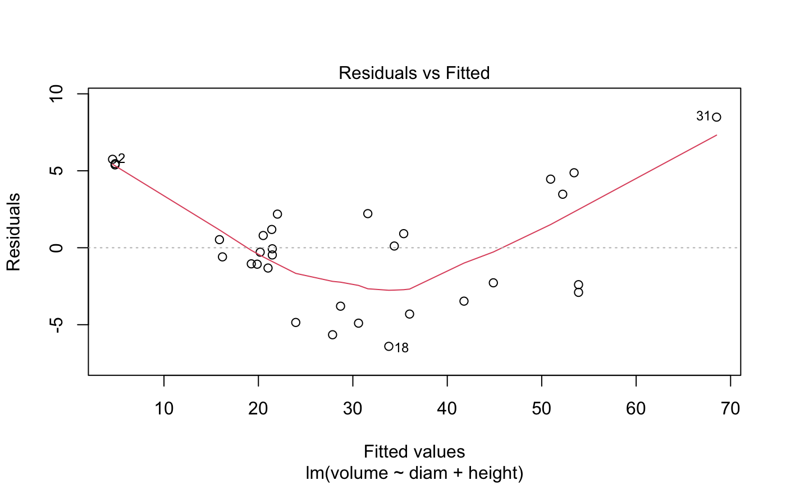

Researchers wanting to understand the relationship between these variables for black cherry trees collected data from 31 trees in the Allegheny National Forest, Pennsylvania.
cherry
A data frame with 31 observations on the following 3 variables.
diameter in inches (at 54 inches above ground)
height is measured in feet
volume in cubic feet
D.J. Hand. A handbook of small data sets. Chapman & Hall/CRC, 1994.
library(ggplot2) library(broom) ggplot(cherry, aes(x = diam, y = volume)) + geom_point() + geom_smooth(method = "lm")#>#> # A tibble: 3 x 5 #> term estimate std.error statistic p.value #> <chr> <dbl> <dbl> <dbl> <dbl> #> 1 (Intercept) -58.0 8.64 -6.71 2.75e- 7 #> 2 diam 4.71 0.264 17.8 8.22e-17 #> 3 height 0.339 0.130 2.61 1.45e- 2